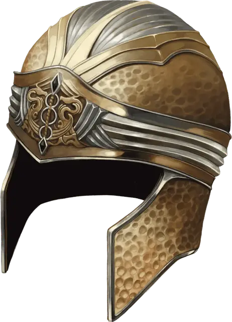

Шлем разъединения
Helm of Disjunction
Чудесный предмет, легендарный (требуется настройка Волшебником, Колдуном или Чародеем)

Рекомендованная стоимость от 50 001 зм
Волшебник Морденкайнен создал этот гладкий золотой шлем. Если он и создал более одного шлема разъединения, их ещё предстоит найти.
Нося этот шлем, действием вы можете испустить импульс антимагии, расходящийся в сферу радиусом 300 футов с центром на вас. Импульс обладает следующими эффектами:
Разъединение магических предметов. Зелья и свитки в области действия уничтожаются. Свойства всех остальных магических предметов в области действия подавляются на 1 минуту. Импульс не воздействует на магические предметы на вас, а также на артефакты.
Разъединение заклинаний. Все активные заклинания прекращаются, если существо, объект или место воздействия хотя бы частично находится в области действия.
Силовая волна. Импульс достаточно силён, чтобы сбить с ног существ рядом с вами. Каждое существо в пределах 30 футов от вас должно преуспеть в спасброске Силы Сл 15, иначе будет сбито с ног.
После использования этого свойства шлема оно не может быть использовано вновь в течение 1к4 дней.